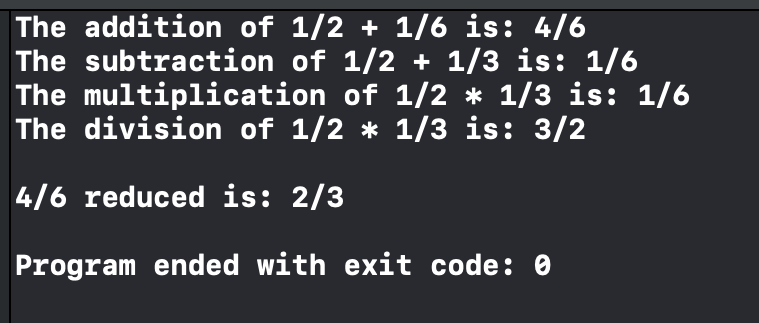

Swift
import Foundation
class Fraction {
let numerator, denominator: Int
init (numerator: Int, denominator: Int) {
self.numerator = numerator
self.denominator = denominator
}
func reduce (_ numerator: Int, _ denominator: Int) -> String {
var numerator = self.numerator
var denominator = self.denominator
var n = numerator
var d = denominator
func gcd(_ n: Int, _ d: Int) -> Int {
let r = n % d
if (r != 0) {
return gcd(d, r)
} else {
return d
}
}
let finalGCD = gcd(numerator, denominator)
numerator = numerator / finalGCD
denominator = denominator / finalGCD
return "\(numerator)/\(denominator)"
}
}
func add(_ fraction1:Fraction, _ fraction2:Fraction) -> Fraction {
let d1 = fraction1.denominator
let d2 = fraction2.denominator
let n1 = fraction1.numerator
let n2 = fraction1.numerator
// Greatest Common Denominator
var gcd = 0
if (d2%d1 == 0) {
gcd = d1;
} else{
gcd = d2%d1;
}
let denominator = (d1*d2) / gcd;
let numerator = ((n1)*(denominator/d1)) + ((n2)*(denominator/d2))
return Fraction(numerator: numerator, denominator: denominator)
}
func subtract(_ fraction1:Fraction, _ fraction2:Fraction) -> Fraction {
let d1 = fraction1.denominator
let d2 = fraction2.denominator
let n1 = fraction1.numerator
let n2 = fraction1.numerator
let commonDenominator = d1%d2
let largerDenominator = max(d1, d2)
let numerator = (n1*commonDenominator) - n2
let denominator = commonDenominator*largerDenominator
return Fraction(numerator: numerator, denominator: denominator)
}
func multiply(_ fraction1:Fraction, _ fraction2:Fraction) -> Fraction {
let d1 = fraction1.denominator
let d2 = fraction2.denominator
let n1 = fraction1.numerator
let n2 = fraction1.numerator
let numerator = n1*n2
let denominator = d1*d2
return Fraction(numerator: numerator, denominator: denominator)
}
func divide(_ fraction1:Fraction, _ fraction2:Fraction) -> Fraction {
let d1 = fraction1.denominator
let d2 = fraction2.denominator
let n1 = fraction1.numerator
let n2 = fraction1.numerator
let numerator = n1*d2
let denominator = d1*n2
return Fraction(numerator: numerator, denominator: denominator)
}
let f1 = Fraction(numerator: 1, denominator: 2)
let f2 = Fraction(numerator: 1, denominator: 6)
let f3 = Fraction(numerator: 1, denominator: 3)
let d1 = f1.denominator
let d2 = f2.denominator
let d3 = f3.denominator
let n1 = f1.numerator
let n2 = f2.numerator
let n3 = f3.numerator
let fAdd = add(f1, f2)
let fSubtract = subtract(f1, f3)
let fMultiply = multiply(f1, f3)
let fDivide = divide(f1, f3)
print("The addition of \(n1)/\(d1) + \(n2)/\(d2) is: \(fAdd.numerator)/\(fAdd.denominator)")
print("The subtraction of \(n1)/\(d1) + \(n3)/\(d3) is: \(fSubtract.numerator)/\(fSubtract.denominator)")
print("The multiplication of \(n1)/\(d1) * \(n3)/\(d3) is: \(fMultiply.numerator)/\(fMultiply.denominator)")
print("The division of \(n1)/\(d1) * \(n3)/\(d3) is: \(fDivide.numerator)/\(fDivide.denominator) \n")
print("\(fAdd.numerator)/\(fAdd.denominator) reduced is: \(fAdd.reduce(fAdd.numerator, fAdd.denominator)) \n")
Output
